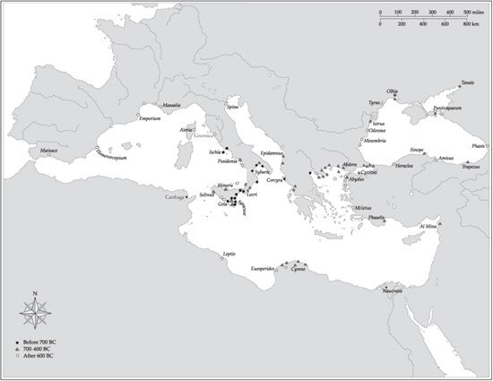

O, Lord, yours too is Lycia and lovely Maeonia and Miletus a desirable city by the sea…
So begins the second part of the first Homeric Hymn to Apollo, one of thirty-three lyric hymns composed mainly in the seventh and sixth centuries BCE. The collection begins with an invocation to Dionysus, passes through the entire pantheon of Olympian gods presided over by Zeus, and several other non-Olympian deities such as the nine Muses besides, and ends with a second Hymn to Castor and Pollux, the Dioscuri, who had a special association with Sparta, as we shall see. The prominent place allotted to Miletus in a Hymn that manages to encompass pretty much all the Greek world east of the Adriatic, and include both the Greeks’ equivalents of Heaven and Hell into the bargain, is an excellent measure of the city’s pre-eminence in early Greece. Not only was it the major player in its own particular geographical region of Hellas, called Ionia, roughly in the centre of the Aegean littoral of western Anatolia. (Lycia lay to the south of Ionia, Maeonia—usually explained as an alternative appellation of the more familiar Lydia—to its immediate west, both being more non-Greek than Greek in origin.) But, in addition, the influence of Miletus was spread far and wide through its central role in not one but two phases of Greek emigration and colonization. Its focal mention in a Hymn devoted in this part of it to Apollo of Delphi was far from purely coincidental, either: for Delphic Apollo, as opposed to the Apollo of Delos celebrated in the first part, was the god of Greek colonization—the major wave of it, that is, that began in the mid-eighth century and ran a strong course until roughly the mid-sixth, the most important single diaspora (‘scattering’) of Greeks before Alexander the Great’s conquests in Asia and north Africa in the 330s and 320s.
The site of Miletus itself had been settled long before the eighth century. Already in the prehistoric Late Bronze Age, Minoans from Crete and even more so Mycenaean Greeks from the mainland had made a strong showing here, and there is reason to suppose that the place referred to in thirteenth-century Hittite texts as Millawanda, lying within the sphere of Ahhijawa (Achaea?), is what the historical Greeks knew as Miletus. Following the general cataclysm that affected that part of the Mediterranean in the decades on either side of 1200, it next appears centrally in a movement of Greek people from mainland Greece eastwards across the Aegean to Asia Minor during the twelfth and eleventh centuries. Historians like to call this the Ionian migration—‘Ionian’ because the region that became known as Ionia (Iawonia, originally) was a major destination of the emigrants, though others went far beyond, as far east as Cyprus, and also because the evolved dialect of Greek that these Greeks spoke became known as Ionic; ‘migration’ to distinguish it from the ‘colonization’ movement referred to at the end of the previous paragraph.
Actually, ‘Ionian’ has a third dimension and implication. Because it was these Ionic-speaking Greeks that non-Greeks such as Assyrians, Phoenicians and Hebrews first encountered in a significant way, the standard oriental term for all Greeks became ‘Ionians’—Yavan, in Hebrew, for example (and still today in Iranian). This was potentially quite a burden to bear, but the Ionians, and not least the Milesians, proved perfectly capable of doing so. Indeed it was they—both those resident along the Anatolian coast and their congeners back in the Greek mainland (for example, the Euboean islanders)—who most fully exploited and developed their oriental inheritances: in the shape, for example, of the alphabet (borrowed and adapted from the Phoenicians of Lebanon), of mathematics (borrowed ultimately from the Babylonians of—in today’s terms—southern Iraq), and of coinage (borrowed from their Lydian neighbours some time in the first half of the sixth century).
Of the twelve Greek settlements that comprised the Asiatic branch of the Ionians, Miletus at the extreme south emerged as the most prominent, with a powerful myth-history. One Neleus ‘son of Codrus’ was credited with being the Milesians’ oecist (Founding Father), and credited too—ancient Greeks saw these things rather differently from us—with presiding over the murder of the already resident Carian males (in Homer, ‘barbarian-speaking’ Carians from Miletus had fought on the Trojan side) in order to seize, marry, and breed with their widows. It’s murder to found a colony, as has been aptly remarked. But it is also salutary to recall that, as in most if not all the colonial sphere of Hellenism, from Phasis in modern Georgia to the east coast of Spain, all Milesians will have carried at least some non-Greek blood in their veins, at least originally. Indeed, at Miletus still in Herodotus’s day, allegedly, wives refused to sit down to eat alongside their husbands, in token remembrance of their ancestresses’ shaming, and even—can this really be true?—to call their husbands by name. At any rate, this does tend to put in truer perspective the symbolic claim placed by Herodotus in the mouth of ‘the Athenians’—also Ionians—in 480/479, that the fact of being Greek was constituted in essential part by ‘same-bloodedness’.
The attractions of the site of Miletus are not readily apparent to the modern visitor, as once-coastal Miletus is now left high and dry some 10 kilometres inland from the heavily-silted mouth of the river Meander. (The former islet of Lade a little further south, to which we shall return at the end of this chapter, has suffered a like fate.) But excavations by Turkish and German archaeologists over the years have recovered and to some extent uncovered an enormous amount, even if most of it is Hellenistic (third century BCE) or—much—later, funded, for example, by the two rival Hellenistic period dynasties of the Ptolemies and Seleucids (see Chapter 11). At least we know that the original Miletus had no fewer than four harbours, indicative of a seaborne orientation from the start.

It comes as less of a surprise therefore to learn that Miletus in its turn became the founder in some sense of a huge number of overseas settlements, even if the figure of ninety alleged in antiquity is scarcely credible. A few of the authentically certain ones were placed strategically on and around the Hellespont (Dardanelles), such as Abydus, and within the Propontis (Sea of Marmara), such as Cyzicus. These were the antechambers to the Black Sea, which the Greeks called alternatively the Axeinos Pontos (‘Inhospitable Sea’) or, euphemistically, the Euxeinos (‘Hospitable’). And it is the Milesian settlements actually around the shores of the Black Sea—especially Sinope and Trapezus on the south shore, Olbia (Berezan) and Odessos (the original of the modern Odessa’s name) on the north—that presumably represent the main thrust of Milesian ambition and interest: in the exchange of Black-Sea-produced goods and commodities, above all grain, salt-fish, and slaves, for commodities and goods that the Black Sea either could not produce (the olive will not grow on the northern shore) or produced less well (fine, painted pottery). Certainly datable archaeological evidence for permanent settlement does not antedate the later seventh century, but that does not exclude much earlier voyaging, perhaps even as early as the late eighth century. Later on, in the sixth century, Greek artefacts are found traded as much as 250 kilometres inland up the Dniepr and Bug rivers, but the Black Sea Greeks themselves were strictly coastal dwellers.
Before we get too carried away by Milesian prowess abroad it is important to remember that Byzantion, like its slightly earlier sister-foundation of Chalcedon (Kadikoy) on the opposite shore of the Bosporus, was probably founded by Megara in central mainland Greece, which had also put down a marker in eastern Sicily well before 700, in the shape of Megara Hyblaea. And closer to home the sanctuary common to all twelve cities, the Panionion (‘All-Ionian’), was located within the territory not of Miletus but Priene. However, the latter fact was in itself an indirect testimony to Miletus’s supreme power, since it was a constant of Greek intercity religious politics that the most important common sanctuaries were located in relatively insignificant political space—Delphi’s ‘amphictyony’ or religious league of mainly central Greek peoples is the obvious mainland analogy, but the same principle applies too to the siting of the most Panhellenic of Panhellenic sanctuaries, Olympia, within the territory of Elis (see Appendix, below).
Moreover, early Miletus was without a doubt not only among the most prosperous of ‘Archaic’ Greek cities but also among the most culturally advanced and adventurous. Its cultural contacts extended as far east as Babylonia (Mesopotamia), as noted, and before the end of the seventh century as far south as the Nile Delta, where the Milesians helped found the commercial entrepôt of Naucratis and dedicated a temple to patron god Apollo. (It is probably through this commercial colony that the Western world first heard the pyramids and obelisks so named: to a Greek a ‘pyramid’ was a kind of bun, an ‘obelisk’ a little roasting-spit—soldiers’ slang!) In the early sixth century it produced the Western world’s first intellectual, Thales (a mini-Leonardo, who among many alleged feats legendary or genuine supposedly foretold a solar eclipse of 585). Throughout the sixth century, indeed, a whole series of brilliant pioneer thinkers emerged here—the natural philosophers Anaximander and Anaximenes, and the proto-historian Hecataeus, prominently among them; and it was here too, probably shortly before 500, that Hippodamus was born, to whose name the grid-plan system of urban layout became indelibly attached. Actually, there is earlier evidence for grid-planning of cities outside the Greek sphere, but even more relevant is that Miletus itself was grid-planned before Hippodamus was born, so that the suggestion has been made that the idea was first developed in one or other of the new cities that Miletus founded before being re-exported to the mother city and then made internationally famous by Hippodamus—who, for conspicuous instance, replanned Athens’s port city of Piraeus on the grid-system some time in or after the 470s.
Politics, however, were another matter. Round about 600 BCE there is evidence of a tyrant ruler at Miletus called Thrasybulus. The word ‘tyrant’ (Greek turannos) is non-Greek and probably of Lydian origin. The borrowing of the loan-word may have been prompted originally by the first Lydian ruler Gyges, who usurped power at Sardis in the early seventh century and ruled by might rather than constitutional legality. Some idea of Thrasybulus’s conception of power can be gleaned from the nonverbal advice he allegedly gave to a fellow-tyrant, Periander of Corinth. Periander was actually the son of the original tyrant, Cypselus, and needed advice on how to retain rather than seize sole power, so he sent a messenger to enquire of the evidently successful Thrasybulus how to do that. Thrasybulus is said to have taken the messenger into a nearby grainfield and proceeded to lop off all the tallest stalks before dismissing the messenger to return to Periander. Further internal troubles are, however, attested by an arbitration conducted some time around 550 by leading citizens from the marble island of Paros in order to end a long-running dispute over contested land between ‘the Wealthy’ and the ‘Handworkers’. What emerged was a compromise oligarchy shared between all the wealthiest, whatever the source of their wealth, and supported by the priestly elite.
Miletus’s prosperity, intellectual fertility, and indeed very existence were abruptly terminated, by the Persians, in 494. This was by no means the first time Miletus had entered into hostilities with an Iranian power. A century earlier it had suffered from the attentions of Alyattes, fourth king of the Lydians whose capital was Sardis, inland from Ionian but heavily orientalized Ephesus. To buy good will or take out insurance cover, Alyattes had married a daughter to a high-ranking Mede from northern Iran at a time when the Medes were in the ascendancy over their southern Iranian kinsmen the Persians. But in the 550s a half-Mede, half-Persian called Cyrus (in Greek Kuros) had reversed that relationship as part of the biggest upheaval seen in the entire Near and Middle East since the rise of the Assyrian empire of the ninth and eighth centuries. Claiming descent from a Persian named (again, according to Greek orthography) Achaemenes, Cyrus founded the Achaemenid Persian empire—the largest and fastest-growing Middle Eastern empire of all antiquity.
Within little more than a decade of his first unifying Iran under his control Cyrus had extended his sway or at least reach as far as the Aegean in the west, subjugating not only Lydia (formerly under King Croesus, of the ‘rich as Croesus’ fabled wealth) but also the Ionian and other Asiatic Greeks in the process, and in 539 he added Babylonia (southern Iraq) to his imperial portfolio, before pushing on further north and east into central Asia. The empire was eventually organized on the basis of vice-regally ruled satrapies, at least twenty in all, and by 500 stretched from Egypt and northern mainland Greece in the west to central Asia and northwest India in the east.
Cyrus the Founder met his death fighting a central Asian people called Massagetae in 530 or 529, and was succeeded by a son, Cambyses, who soon added Egypt to the Persians’ domain in 525. But Cambyses’s reign ended—or was ended—abruptly some three years later, either through murder or possibly suicide; an interregnum and usurpation ensued, and many of the very recently, too rapidly subjugated peoples chose to make a bid for independence—only to be firmly suppressed, if not quite humiliated, by a distant relative of Cambyses called Darius, who made the smart move of marrying Cyrus’s daughter Atossa to keep regnal power ostensibly within the (Achaemenid) lineage.
By 520 Darius had restored order throughout the massively extended Persian empire, thanks chiefly to the great guiding wisdom of the Zoroastrian super-god of light Ahura-Mazda—as he was careful proudly to proclaim in numerous texts distributed throughout his realm but most magnificently and humblingly at Bisitun, in a trilingual (Old Persian, local Elamite, and Babylonian) inscription carved in the living rock close by the road running between Persia and the old Median capital of Ecbatana (Hamadan). For the benefit of those who couldn’t read any of the texts—and short of clambering up the rock-face, that meant everyone—they were accompanied by a series of massive relief sculptures depicting a Darius triumphant, under the sign (literally) of Ahura-Mazda, and receiving the humiliating surrender of a dozen rebel kings and leaders.
Not one of these, however, was Greek. For in the late 520s, whatever they may have felt about being subjects of an alien empire, Darius’s Greek subjects chose to remain quiet, and out of the fray. Twenty years on, however, that choice was dramatically reversed, as Greeks all along the Aegean littoral and on Cyprus too rose up in rebellion. The revolt is usually referred to as the ‘Ionian Revolt’, but actually it was Aeolian and Dorian Greeks of Asia who revolted too, along with Greeks and non-Greek Phoenicians resident on Cyprus. Herodotus disapproved mightily of the revolt, as did the Delphic oracle, if perhaps only in retrospect:
At that time, O Miletus, contriver of evil deeds,
You shall be made for many a glorious gift and a feast:
Then shall your wives be compelled to wash the feet of the long-haired,
And in Didyma then my shrine shall be tended by others.
Yet it took Darius six summer campaigning seasons (499–494 inclusive) finally to quell and crush the Greek rebels. The end came with a massive sea-battle off the (then) islet of Lade near Miletus. For the ringleader city, Miletus, nothing short of an exemplary punishment would do. Darius decreed that it should be literally annihilated and some of its surviving inhabitants transported to Ampe at the mouth of the Tigris. For the Athenians, fellow-Ionians, the fall of Miletus was a tragedy in more than one sense: one of the earliest known tragic poets, Phrynichus, staged a tragedy in c.493 entitled The Capture of Miletus, for which he was fined a huge sum in thoroughly democratic fashion for reminding the Athenians too poignantly of their sorrows.
Nor did that alone satisfy Darius. He also—in an uncharacteristic but not unparalleled show of religious vindictiveness and intolerance—ordered to be destroyed Miletus’s most important shrine, that to the Ionians’ patron god Apollo at Didyma, which functioned (like Apollo’s Delphic shrine) above all else as a site of oracular consultation. Now Didyma was over 20 kilometres south of Miletus, but it was linked to its metropolis by a Sacred Way, much as Eleusis was linked to Athens by the most famous of such dedicated trunk-routes. From 600 BCE on, when it was patronized by an Egyptian pharaoh, Didyma had benefited from a series of costly, sometimes massive gifts, including golden objects from Lydian King Croesus, the care of which had been astutely managed by an aristocratic priestly family known as the Branchidae or descendants of Branchus. The first sanctuary on this site dates as far back as the eighth century, but in the 550s the Branchidae could afford to construct a temple in the Ionic order, mostly hypaethral (open to the sky), measuring some 85 × 38 metres, including its double surrounding colonnade of over 100 columns, each carved with thirty-six flutes. In 494 this magnificent, indeed magniloquent structure was given its surcease, at Persian hands, and the Branchidae themselves were frogmarched to Bactria (in modern Afghanistan).
Nor was it only people who received their marching-orders. As was the way of ancient Middle Eastern empires, objects too were removed as war-trophies and carried back to the Persian heartland. One particularly eloquent such trophy is a simply massive (93.7 kilograms) inscribed bronze weight in the form of an astragal (knuckle-bone) with built-in carrying handles. Pity the poor beasts of burden that had to draw the wagons bearing this dead weight as far as the acropolis of inland Susa in southern Iran, Darius’s chief administrative capital, where it was eventually unearthed many centuries later (Plate 7).
Miletus, like another of our selected cities (Thebes, Chapter 10), quite quickly managed to re-establish itself after experiencing a total destruction. During the second half of the fifth century the renewed city came to play an important if somewhat troubled role in the history of the Athenian empire and in relations between Sparta and Athens. But probably the most famous—or notorious—native of Miletus during this period was Aspasia, although she made her name by emigrating permanently to Athens and there becoming the partner (not ‘mistress’) first of Pericles and then of another leading Athenian democrat, Lysicles. It was no fault of hers that she was labelled a whore and a madam, and caricatured as such by Aristophanes.